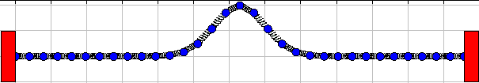

"The investigation by John and Daniel Bernoulli [of the coupled oscillator chain] may be said to form the beginning of theoretical physics as distinct from mechanics, in the sense that it is the first attempt to formulate the laws of motion of a system of particles rather than that of a single particle." Leon Brillouin
Oscillator Chain models a one-dimensional linear array of coupled harmonic oscillators with fixed ends. This model can be used to study the propagation of waves in a continuous medium and the vibrational modes of a crystalline lattice. The Ejs model shown here contains 31 coupled oscillators equally spaced within the interval [0, 2 π] with fixed ends. The m-th normal mode of this system can be observed by entering f(x) = sin(m*x/2) as the initial displacement where m is an integer.
Wave propagation can be studied by entering a localized pulse or by setting the initial displacement to zero and dragging oscillators to form a wave packet. An interesting and important feature of the Oscillator Chain model is that the speed of a sinusoidal wave along the oscillator array depends on its wavelength. This causes a wave packet to disperse (change shape) and imposes a maximum frequency of oscillation (cutoff frequency) as is observed in actual crystals.
The coupled oscillator (beaded string) model is discussed in intermediate mechanics textbooks.
There are many laboratory and computer experiments that build on the basic model.
The Oscillator Chain JavaScript Model was developed by Wolfgang Christian using version 5 of the Easy Java Simulations (EJS 5) modeling tool. Although EJS is a Java program, EJS 5 creates stand alone JavaScript programs that run in almost any browser. Information about EJS is available at: <http://www.um.es/fem/Ejs/> and in the OSP comPADRE collection <http://www.compadre.org/OSP/>.